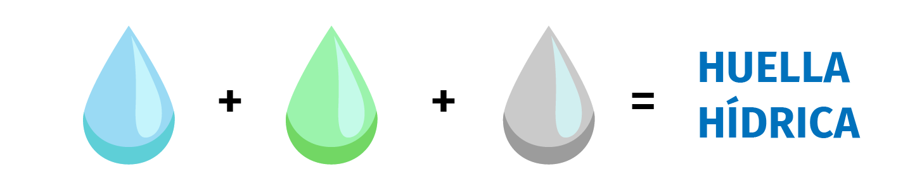
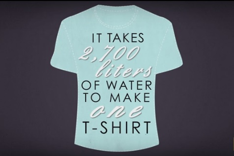
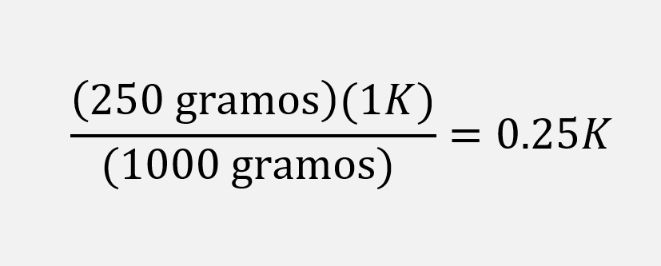
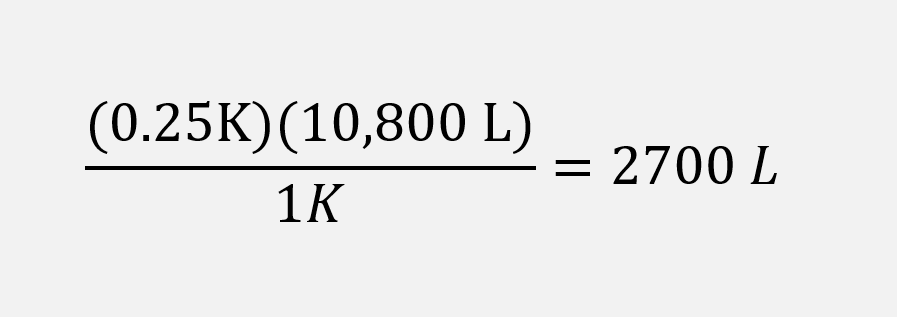
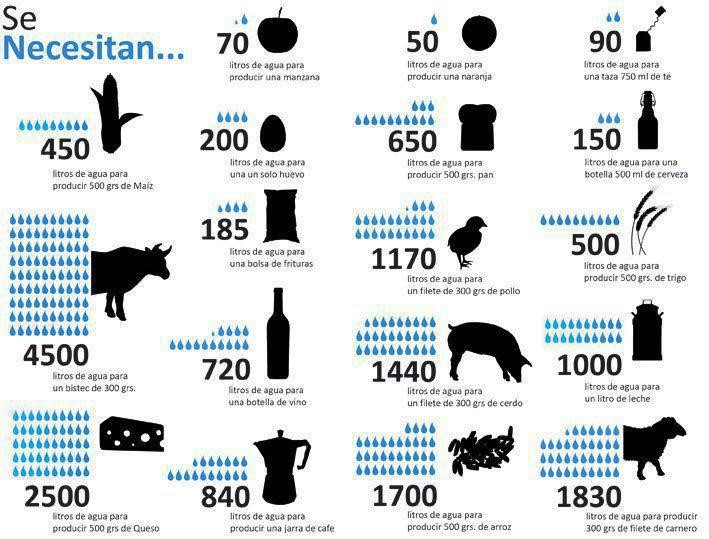

La Huella Hídrica en mi comunidad
La Huella Hídrica directa consumida en el entorno familiar es:
La Huella Hídrica indirecta de la persona, que es la suma de las Huellas Hídricas de los distintos productos que empleamos a lo largo de nuestra vida diaria. Está, sobre todo, en:
Ejemplos con calculos
¿Cómo se calcula la Huella Hídrica?
Para calcular la huella hídrica de un proyecto o una organización se ponderan tres tipos distintos de agua (la azul, la verde y la gris):
También se necesita:
Hay que tener en cuenta estrategias para reducir la huella hídrica y evitar su contaminación y malgasto.
Ejemplo: Para obtener una playera de algodón
El contenido de agua virtual de una playera de algodón, resulta de sumar el agua utilizada para el crecimiento de las plantas y la que se deriva del procesamiento industrial de la semilla de algodón, de la cual se obtiene la tela.
Para obtener 1 kilo de tela de algodón, se requieren 10,800 litros de agua. De esa cantidad, 45% representa el agua para riego consumida por la planta de algodón; 41% es agua de lluvia que se evapora del campo de cultivo durante el periodo de crecimiento; y 14% es el agua necesaria para diluir el agua residual que resulta del uso de fertilizantes en el campo y de sustancias químicas en la industria textil: para el blanqueamiento de la tela se requieren aproximadamente 30 mil litros de agua por tonelada de algodón y para el teñido de la tela 140 mil litros por tonelada.
Tomando en cuenta que la playera pesa 250 gramos se convierten 250 gramos a kilogramos, por regla de tres, o por factor de conversión.
Ya que se conoce que se conoce que para producir 1 K de algodón se hace uso de 10,800 litros de agua, con otra regla de tres se calcula:
Disminuir la Huella Hídrica
La especialista Rosa Leal Bautista hizo un llamado para disminuir el consumo de agua, explicó que cada objeto que nos rodea necesita de muchos litros para ser producido, no se ve, sin embargo, está presente en la comida, bienes y servicios que consumimos a diario.
Las aguas subterráneas -especificó- abastecen de agua potable al 50% de la población mundial, 2 mil 500 millones de personas dependen exclusivamente de los recursos de estas aguas para satisfacer sus necesidades básicas, el 20% de los acuíferos mundiales está siendo sobreexplotado lo que tendrá consecuencias graves como el hundimiento del suelo y la intrusión de agua salina, además el agua enfrenta presiones por contaminación.
Se estima -dijo- que solamente el 0.77% se encuentra como agua dulce accesible al ser humano. México tiene aproximadamente el 0.1 por ciento del total de agua dulce disponible a nivel mundial.
Aproximadamente el 76.30% del agua en México se usa para las actividades agrícolas, un 4.84% para energía eléctrica excluyendo la hidroelectricidad, 4.29% para la industria autoabastecida y 14.57% de abastecimiento al público.
La Huella Hídrica en el entorno escolar
Autor: Equipo 5